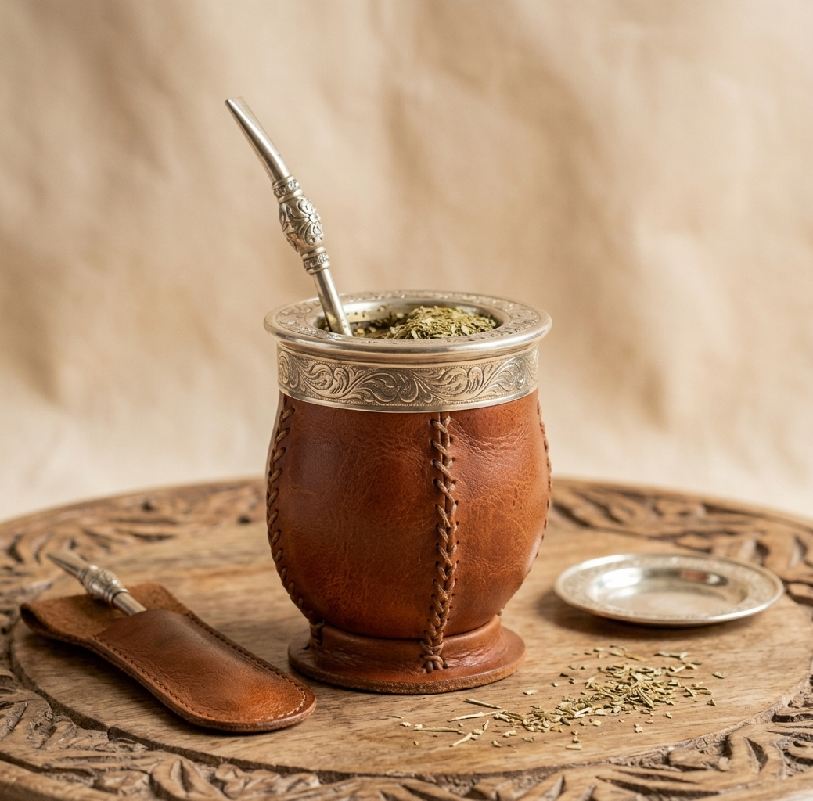
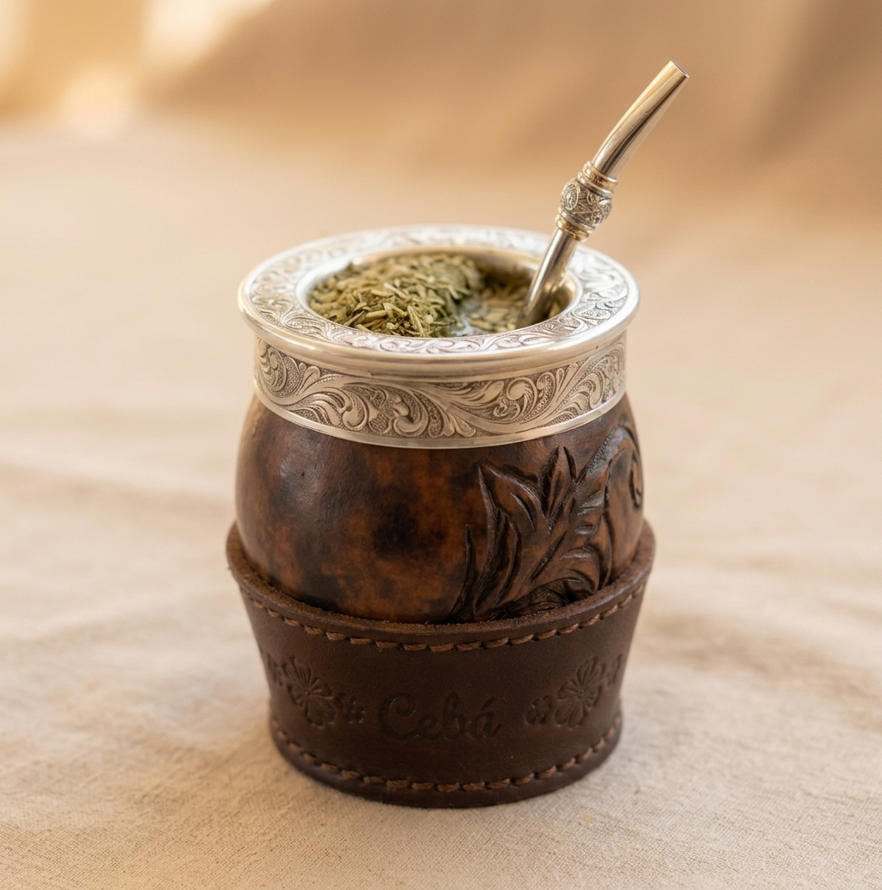
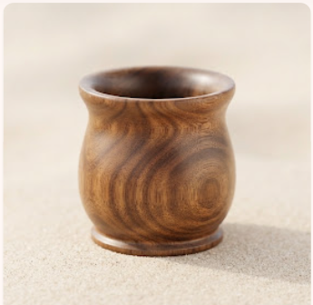
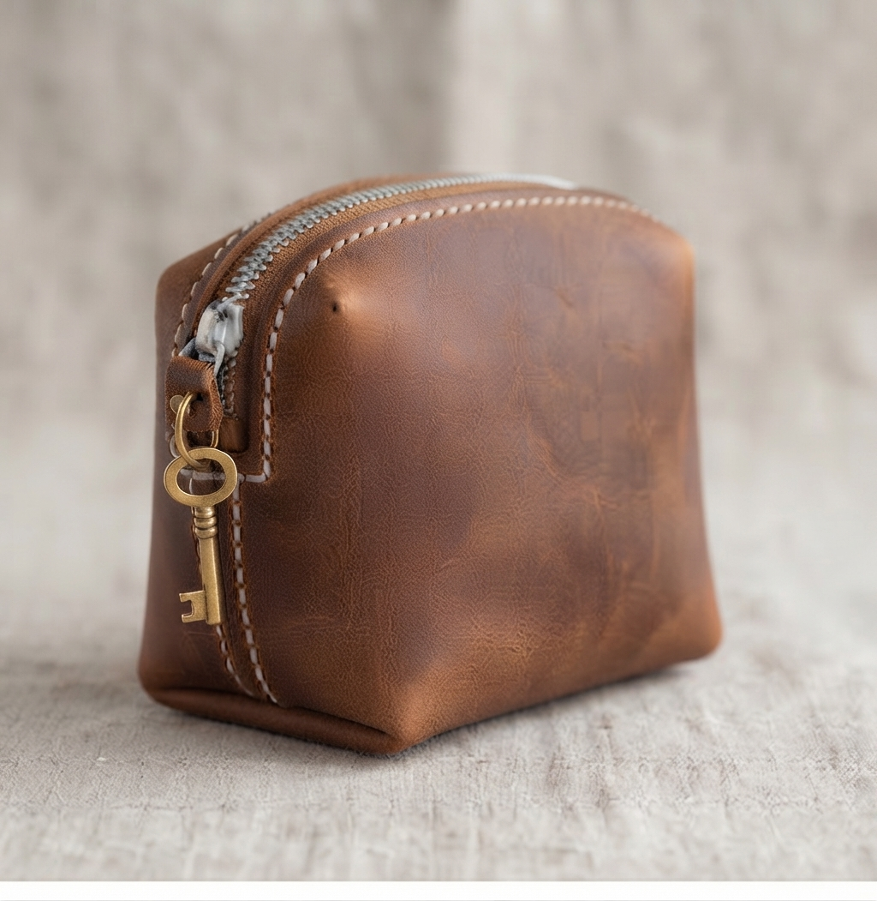
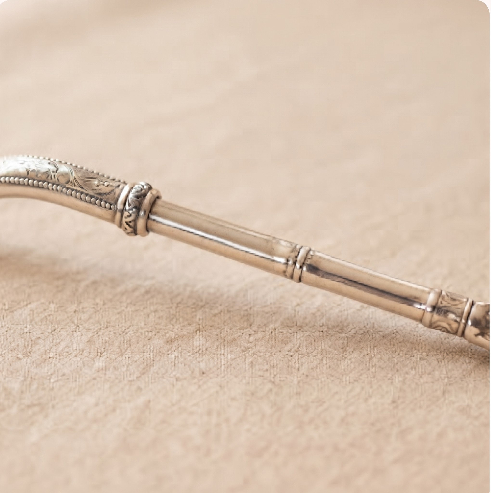
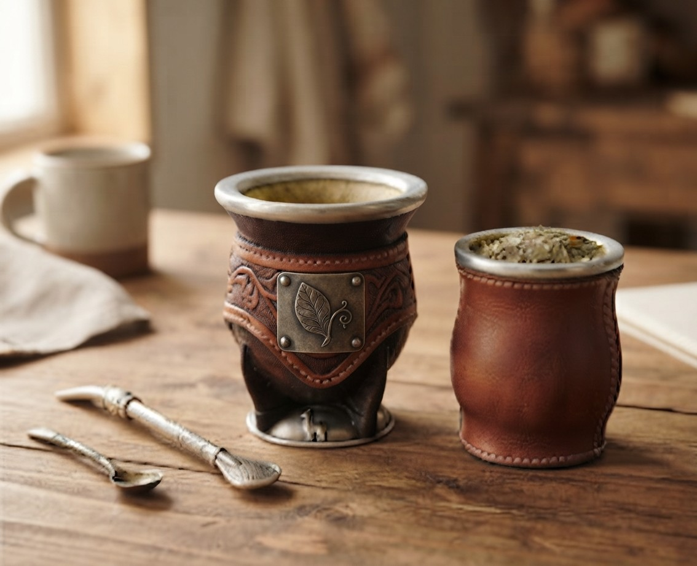
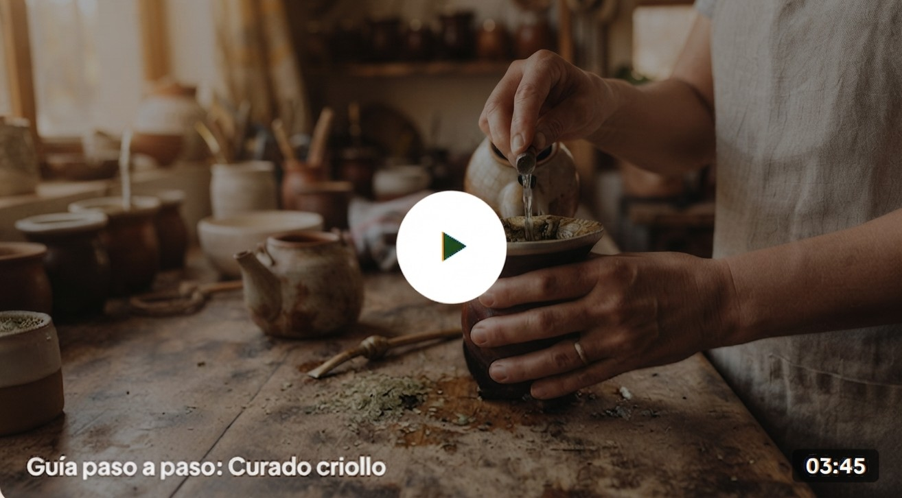

Clásico criollo
Mate de calabaza forrado en cuero
Calabaza brasileña seleccionada con cuero
TRADICIÓN Y OFICIO CRIOLLO
Seleccionamos los mejores materiales naturales y trabajamos cada pieza de forma artesanal para que disfrutes de unos mates únicos en cada cebada.
Ver ProductosCATÁLOGO EXCLUSIVO
Piezas únicas creadas por artesanos criollos con dedicación y oficio.

Clásico criollo
Calabaza brasileña seleccionada con cuero

Gama Premium
Virola cincelada artesanalmente en alpaca...

Maderas nobles
Torneado en madera estacionada, aroma...

Marroquinería
Cierre hermético superior y protector inferior...

Orfebreríá
Filtro cuchara desmontable y aleación pura...

Set Completo
Incluye mate imperial, bombilla de alpaca y ...

Aprendé la tradición
Curar el mate de calabaza o madera es fundamental para sellar los poros naturales y garantizar el mejor sabor en cada mateada.
Lavá el interior con agua tibia para quitar impurezas (nunca uses detergente).
Llenalo con yerba usada y humedecé con un poco de agua tibia.
Dejalo reposar 24 hs y repetí 3 días, raspando el interior con una cuchara para sacar el hollejo.
¡Listo! Ya tenés tu mate bien curado para empezar a cebar.
Comunidad Cebá
Historias y experiencias reales compartidas en cada rincón del país.
★★★★★
"Una locura la calidad del cuero y las terminaciones. Llegó impecable a los dos días."
★★★★★
"Excelente calidad de los mates y el servicio al cliente es increíble."
★★★★★
"He probado muchos mates, pero este es el mejor que he tenido."
★★★★★
"Lo compré de regalo para mi viejo y no lo suelta más. El curado quedó perfecto siguiendo la guía."
★★★★★
"La yerbera de cuero es una belleza, se nota que está hecha a mano. Muy buena atención por WhatsApp."
★★★★★
"Pedí un grabado personalizado y quedó mejor de lo que esperaba. Súper recomendable."
Escribinos
¿Tenés alguna duda o querés un grabado personalizado? Estamos para ayudarte.
WhatsApp directo
+54 9 11 1234-5678
Instagram oficial
@ceba.mates
Horarios de atención
Lunes a Sábados 9:00 a 19:00 hs
Despachamos de forma segura mediante Correo Argentino y Andreani hasta la puerta de tu casa o sucursal más cercana.
Seguimiento online en tiempo real